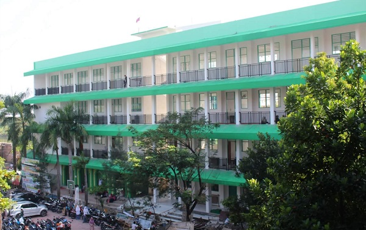

Fakta unik tentang saya
📌 Zodiak Leo
📌 Lahir 9 Agustus 2006
📌 Alamat Jl. Pangeran Diponegoro Rt.03 Rw.01 Desa Tracal-Karanggeneng-Lamongan
📌 Suka kelihatan SO COOL padahal COOL bangettttsss.....
Berkenalan dengan saya
Nama saya Muhammad Ibnu Rojab. Saya adalah anak pertama dari dua bersaudara. Saya lahir di Lamongan tepat 61
tahun setelah kota Nagasaki dibom Atom yaitu pada tanggal 9 Agustus 2006. Alamat rumah saya di Jalan
Pangeran Diponegoro Rt.03 Rw.01 Desa Tracal Kecamatan Karanggeneng Kabupaten Lamongan.
Hobi saya adalah bermain GAME ONLINE. Tentu saja Karena GAME ONLINE sangat seru, Selain itu GAME ONLINE
dapat melatih otak saya untuk berfikir, Karena bermain GAME ONLINE membutuhkan kerja otak utuk menyusun
formasi dan strategi untuk menang. GAME ONLINE favorit saya adalah MOBILE LEGEND.
Saya sangat suka film yang bergenre aksi seperti TRANSFORMERS, karena film TRANSFOREMERS memiliki tema
robotic dan adegan perang yang sangat seru. Karakter favorit saya dalam film TRANSFOREMERS adalah
BUMBLEBEE
Selain itu saya juga suka film anime JUJUTSU KAISEN, alasannya karena didalam film tersebut terdapat
karakter favorit saya yaitu RYOMEN SUKUNA
Makanan dan minuman favorit saya adalah nasi goreng dan es kelapa muda. Karena nasi goreng memiliki rasa
yang gurih apalagi jika bau-nya harum. apalagijika ditambah es kelapa muda yang rasanya manis alami dan
sealu membuat awet muda.
Suatu hal yang memalukan yang hampir selalu saya lakukan dikelas hingga MA adalah tidur dikelas. Saya cenderung lebih suka guru yang banyak menulis dipapan tulis daripada gru yang banyak menerangkan. Karena menulis adalah satu-satunya cara agar saya tidak tidur dikelas, terkadang pada saat jam pelajaran Bahasa Inggris atau Bahasa Arab ketika guru sedang membacakan arti sebuah kalimat saya justru malah menulis terjemahan dibawah kalimat yang sedang dibacakan/diartikan.
Percaya atau tidak percaya saya adalah satu-satunya siswa yang tidak memiliki kumis sama sekali dikelas.
Desain web adalah materi yang paling saya sukai tetapi belum semua saya kuasai. Selain itu saya juga tidak suka dengan yang namanya hitung-hitungan, sedangkan dalam Bahasa pemrogramman banyak ilmu Matematika. Mungkin saya tertarik dari segi desainnya saja.
Sesuatu yang saya ininkan tetapi sampai saat ini belum tercapai yang Pertama adalah mengikuti lomba LKTI seperti Essay, Puisi, Cerpen, DLL dan memenangkannya. kedua saya bercita-cita ingin kuliah di Institut Teknologi Sepuluh November Surabaya (ITS), samun saya tidak yakin jika nilai minimum saya bisa memenuhi persyaratan masuk ke ITS, sehingga saya berpaling ingin kuliah di UIN Malang dengan prodi Sejarah Islam.
Tidak seperti anak lelaki pada umumnya, saya lebih suka mengurung diri dirumah dibandingkan pergi keluar rumah untuk hal yang tidak penting seperti nongkrong bersama teman.teman, alasannya saya lebih suka membelanjakan uang untuk game dibanding nongkrong keluar rumah.
Biografi saya
Sejak masih bayi saya sudah dibawa bersama orang tua saya merantau ke Banten, lebih tepatnya Desa
Talagasari Kecamatan Balaraja Kabupaten Tangerang provinsi Banten. Usia 4 tahun saya bersekolah di Tk
Al-Ikhwan.
Kemudian setelah lulus saya meneruskan di SDN Talagasari 1 Balaraja. Uniknya disini saya sering
dijadikan bahan contekan oleh teman-teman saya dikarenakan nilai saya selalu bagus. di SD mapel favorit saya
adalah PAI (Pendidikan Agama Islam), sedangkan mapel yang paling saya tidak suka adalah Bahasa Sunda. Jadi,
setiap ada pelajaran Bahasa Sunda nilai saya selalu jelek.
Pada saat kelas 4 saya diperintahkankan oleh guru untuk mewakili sekolah dalam mengikuti lomba cerdas
cermat PAI antar sekolah tingkat kecamatan, sayangnya tim saya kalah dalam babak penyisihan.
Kemudian pada saat kelas 5 saya kembali diperintahkan oleh guru untuk mengikuti cabang perlombaan yang
sama, pada saat itu saya juga terpilih untuk mewakili sekolah dalam cabang perlombaan membaca puisi. Namun,
saya tetap memilih cabang perlombaan cerdas cermat PAI. Ada sesi saat lomba cerdas cermat dimana tim saya
menjawab semua habis pertanyaan yang diberikan oleh guru. Namun, sayangnya tim Saya kalah pada babak semi
final.
Ketika kelas 5 kelas saya melakukan Study Tour ke Monumen Pancasila Sakti dan Taman Mini Indonesia
Indah, saat itu sebenarnya perjalanan akan dilanjutkan ke Monumen Nasional, namun sayangnya hari itu Monas
itu tutup, sehingga perjalanan dialihkan ke Taman Mini. Saat SD guru favorit saya adalah pak Iskandar yang
sekaligus wali kelas saya dikelas 4.
Setelah lulus saya melanjutkan di MTs Darul Hikam Tracal. Dengan berat hati saya harus meninggalkan
teman-teman saya di SD, karena orang tua saya pindah ke desa, sehingga mau tidak mau saya juga harus pindah
sekolah ke desa. MTs saya selalu mengadakan rutinitas tahunan seperti kemah 3 hari 2 malam di Mangrove Tuban
dan kelas saya hanya mengikuti saat kelas 7 dan 8 dikarenakan saat kelas 9 terhalang pandemi covid-19.
Ketika di MTs. mapel favorit saya adalah Al-Qur'an Hadist, yang membuat saya suka mapel Al-Qur'an Hadist
dikarenakan saat itu guru saya selalu memberi tugas menghafal surah pendek beserta artinya. Guru yang
mengajar mapel Al-Qur'an hadist tersebut adalah guru favorit saya saat MTs, nama beliau adalah
Ni'ayati.

Setelah saya lulus dari MTs saya melanjutkan sekolah ke MA Matholi'ul Anwar. Saya mendaftar sekolah
kesini bersma 2 teman saya dan memilih jurusan yang sama yaitu MIPA TI, tetapi hanya saya yang masuk ke
kelas MIPA TI sedangkan 2 teman saya masuk kekelas IPS. Sehingga saya mendapatkan pernghargaan dari ibu saya
berupa sebuah laptop.
Pada tanggal 28 Juli saya masuk ke Pondok Pesantren Matholi'ul Anwar yang ada didesa Simo Sungelebak
Pada tanggal 1 Februari 2021 saya mengikuti lomba Stand Up Comedy karena tidak ada perwakilan dari kelas
saya, jadi saya yang harus mengikuti lomba itu, hingga pada akhirnya saya mendapankan juara 2 dalam lomaba
tersebut. Karena itu pula saya harus mengikuti lomba Stand Up Comedy mewakili asrama saya di pesantren pada
acara MAWAR GOT TALENT hingga akhirnya mendapatkan juara 1.
Tidak berhenti sampai situ, dalam acara isra' mi'raj saya kembali harus naik ke mimbar untuk menampilkan
Stand Up Comedy kembali. Lalu pada acara Halal Bihalal tahun 2022 juga saya mendapat giliran untuk
tampil.
Diawal kelas 2 saya mengikuti bimbingan (Coding) yang didampingi oleh mas Ainul. Saya menggunakan Laptop
ASUS (X441M) yang saat itu kondisi keyboardnya selalu rusak, tetapi hal itu tidak membuat saya berkecil hati
dan tetap mengikuti bimbingan. Didalam kelas coding bersama beberapa kakak kelas TI dan 1 teman sekelas saya
yang bernama Muhammad Alif Mujaddid. Ditingkat MA mata pelajaran favorit saya adalah TIK, itu yang
menyebabkan saya berminat untuk mengikuti bimbingan coding.
Suatu hari dikelas 3 seorang teman saya memberi tahu saya bahwa akan diadakan sebuah acara simulasi bagi
kelas 3 SMA/SMK/MA yang bernama Information System Expo (ISE) pada tanggal 26-27 di ITS, tetapi saat itu
posisi saya sedang di Pondok dan tidak membawa Hanphone sehingga beberapa hari kemudian saya pulang untuk
mendaftar ISE, namun sayangnya karena kuota yang hanya dibatasi 60 peserta akibatnya saya tidak bisa
mengikuti acara tersebut karena kehabisan kuota. Tetapi saya sudah menganggap mungkin itu belum rezeki saya.
Hingga suatu saat pendaftaran SNBP di buka saya mengikutinya dan memilih prodi Sistem Informasi (SI), tetapi sayang sekali saya belum memenuhi standar siswa Eligible. Akhirnya pendaftaran jalur SPAN-PTKIN dibuka saya mencoba lagi, dan di jalur itu saya di terima di UIN Sayyid Ali Rahmatullah Tulungagung prodi Komunikasi dan Penyiaran Islam (KPI).
Hubungi saya